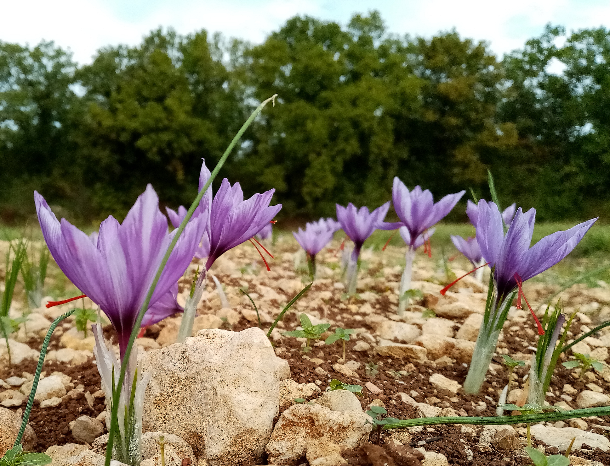
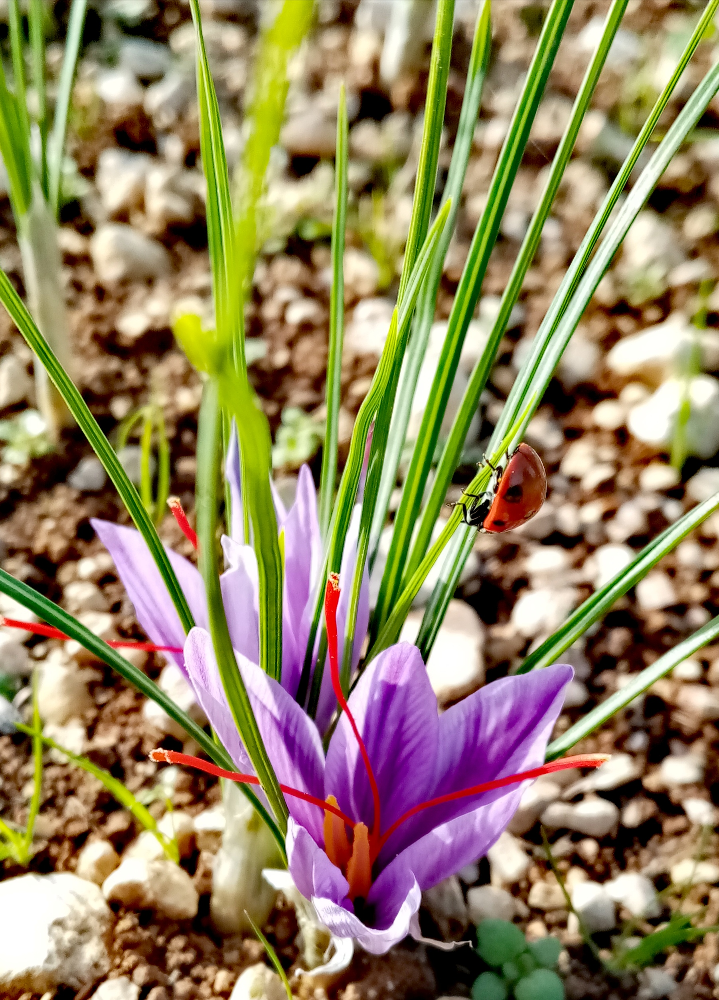
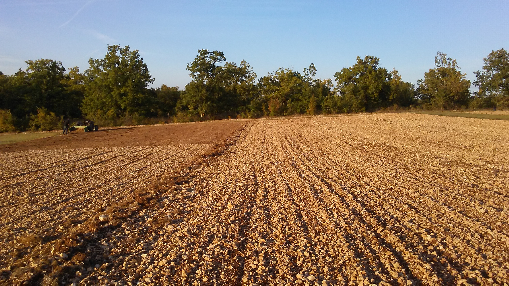
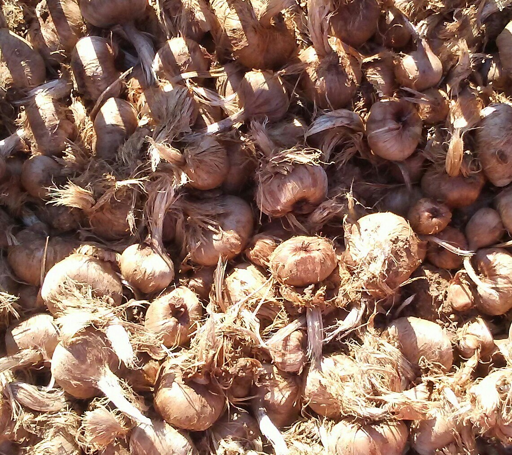
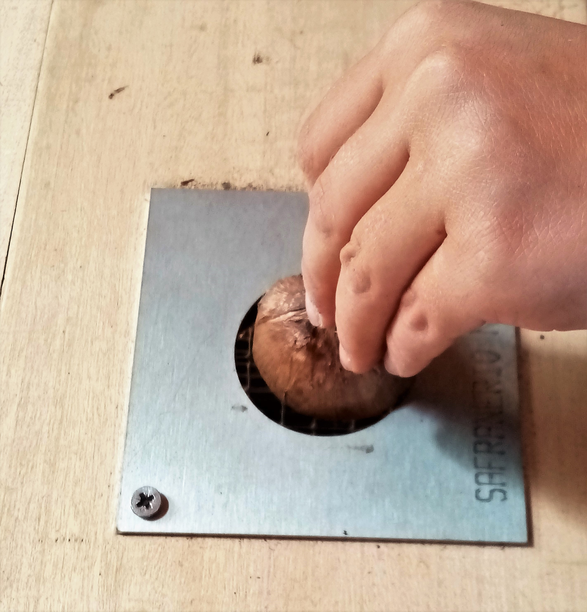
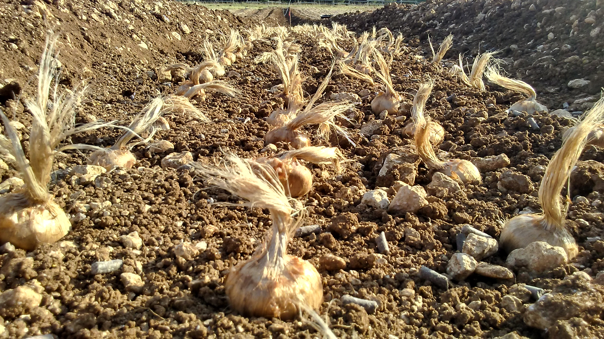
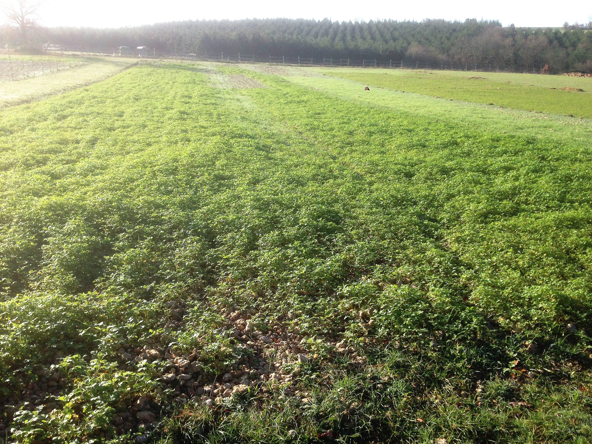
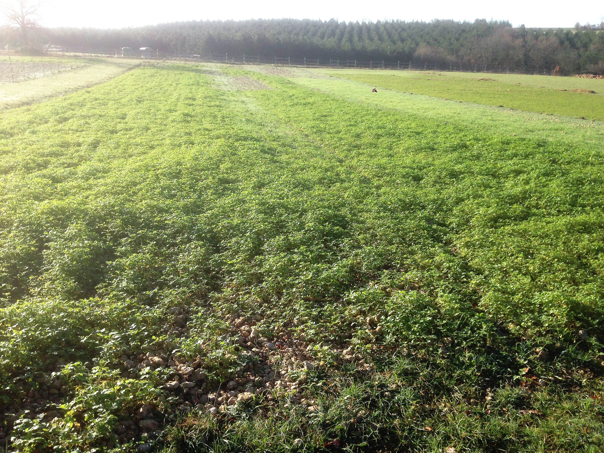

La parcelle

La safranière de Fontorbe est implantée sur une ancienne prairie non exploitée depuis plus de 30 ans, donc préservée de tout traitement phytosanitaire, mais compactée.
Cette parcelle est exposée sud-est, la terre est argilo-calcaire, peu profonde et très caillouteuse. Elle est légèrement en pente, ce qui favorise le drainage de la plantation.
La safranière occupe une surface totale de 1200m2, ce qui nous permet, compte tenu de la densité de plantation, d’avoir une production suffisante de safran et de bulbes.
Contrairement à de nombreuses exploitations, la safranière de Fontorbe reste en place seulement 2 ans (alors que le cycle classique est plutôt de 4 à 7 ans). Ce choix s’est opéré au fils des années… Sur notre sol, les bulbes, cultivés en buttes, ont un bon volume de multiplication la première année qui se perd les années suivantes. Probablement du fait de la pauvreté du sol.
Au total, un hectare est donc dédié à la safranière, ce qui permet, entre autre, d’assurer les rotations nécessaires afin de ne pas épuiser le sol et prendre soin chaque année, par différents amendements, des parcelles qui constitueront les futures safranières.
Cette parcelle est exposée sud-est, la terre est argilo-calcaire, peu profonde et très caillouteuse. Elle est légèrement en pente, ce qui favorise le drainage de la plantation.
La safranière occupe une surface totale de 1200m2, ce qui nous permet, compte tenu de la densité de plantation, d’avoir une production suffisante de safran et de bulbes.
Contrairement à de nombreuses exploitations, la safranière de Fontorbe reste en place seulement 2 ans (alors que le cycle classique est plutôt de 4 à 7 ans). Ce choix s’est opéré au fils des années… Sur notre sol, les bulbes, cultivés en buttes, ont un bon volume de multiplication la première année qui se perd les années suivantes. Probablement du fait de la pauvreté du sol.
Au total, un hectare est donc dédié à la safranière, ce qui permet, entre autre, d’assurer les rotations nécessaires afin de ne pas épuiser le sol et prendre soin chaque année, par différents amendements, des parcelles qui constitueront les futures safranières.
Le bulbe souche Quercy
 Plusieurs espèces de crocus à safran existent mais le crocus sativus reste celui qui offre les pistils les plus gros, donc le plus productif.
Le crocus sativus ne donne pas de graine. C’est une plante stérile, sa multiplication se fait par dédoublement des caïeux. Cette reproduction à l’identique implique de porter une attention toute particulière au choix de la souche initiale. En effet, l’installation d’une safranière à partir de bulbes d’importation présente un risque réel. Ces bulbes, triés et conservés de manière aléatoire, peuvent être porteurs de virus et de champignons et provoquer la destruction complète d’une plantation.
En 2017, comme tout safranier, notre souci était de constituer un « cheptel » de bulbes productif, suffisant le plus rapidement possible. C’est pourquoi, nous avons préféré un bulbe Souche Quercy, plus cher qu’un bulbe hollandais, mais surtout plus robuste !
Les bulbes souche Quercy survivent depuis plusieurs centaines d’années et montrent des capacités de résistance et d’adaptation exceptionnelles.
Depuis 2001, le conservatoire botanique du safran du Quercy porte une attention toute particulière à cette souche Quercy et cherche à préserver ses qualités intrinsèques. Afin de promouvoir sa conservation et sa multiplication, le conservatoire propose une traçabilité de ses bulbes associée à un cahier des charges contraignant, assurant ainsi une sélection rigoureuse des bulbes souche Quercy. Ce travail de sélection manuel permet de travailler avec un bulbe ferme et sain.
Nous travaillons exclusivement avec la souche Quercy afin de protéger notre safranière de tout risque de contamination.
Plusieurs espèces de crocus à safran existent mais le crocus sativus reste celui qui offre les pistils les plus gros, donc le plus productif.
Le crocus sativus ne donne pas de graine. C’est une plante stérile, sa multiplication se fait par dédoublement des caïeux. Cette reproduction à l’identique implique de porter une attention toute particulière au choix de la souche initiale. En effet, l’installation d’une safranière à partir de bulbes d’importation présente un risque réel. Ces bulbes, triés et conservés de manière aléatoire, peuvent être porteurs de virus et de champignons et provoquer la destruction complète d’une plantation.
En 2017, comme tout safranier, notre souci était de constituer un « cheptel » de bulbes productif, suffisant le plus rapidement possible. C’est pourquoi, nous avons préféré un bulbe Souche Quercy, plus cher qu’un bulbe hollandais, mais surtout plus robuste !
Les bulbes souche Quercy survivent depuis plusieurs centaines d’années et montrent des capacités de résistance et d’adaptation exceptionnelles.
Depuis 2001, le conservatoire botanique du safran du Quercy porte une attention toute particulière à cette souche Quercy et cherche à préserver ses qualités intrinsèques. Afin de promouvoir sa conservation et sa multiplication, le conservatoire propose une traçabilité de ses bulbes associée à un cahier des charges contraignant, assurant ainsi une sélection rigoureuse des bulbes souche Quercy. Ce travail de sélection manuel permet de travailler avec un bulbe ferme et sain.
Nous travaillons exclusivement avec la souche Quercy afin de protéger notre safranière de tout risque de contamination.
Certification BIO
 Penser la culture du safran selon les méthodes de l’agriculture Bio n’a pas été une option mais plutôt une évidence (pour la safranière comme pour l’ensemble de Fontorbe!).Cependant, l’option de la certification Bio, elle, continue de nous agiter… En 2018, nous avons engagé Fontorbe dans le procédé de la certification Bio.
Nos bulbes, notre safran sont donc officiellement certifiés Bio (même si notre engagement en bio va au-delà des exigences de l’organisme certificateur). Cette certification permet :
• au futur safranier d’obtenir un bulbe bio certifié et donc de pouvoir engager plus rapidement ses parcelles en BIO.
• d’offrir au consommateur de safran une garantie de la qualité du produit.
A terme notre volonté serait de s’affranchir (encore une fois), avec vous, de ce système et de remplacer ces organismes certificateurs par des rencontres sur site avec vous, des échanges sur notre approche de la culture, bref par un lien de confiance et de proximité.
En attendant, nous assumons le coût de la certification bio (même s’il nous semble aberrant de devoir acheter la preuve d’une agriculture responsable quand l’agriculture intensive est gratuite), nous faisons le choix de ne pas répercuter le coût de cette certification Bio sur nos clients.
Nos méthodes de culture
Préparation du sol

Reprendre une prairie du Causse qui n’a pas été travaillée depuis plusieurs décennies est un avantage indéniable mais implique un engagement important avant de pouvoir implanter nos bulbes.
Même si le crocus sativus apprécie les sols drainants, un travail d’épierrage fastidieux (entre les passages du cultivateur) est indispensable à Fontorbe. Cette tâche n’est pas mécanisable, et il n’est pas souhaitable de passer le broyeur à cailloux qui modifierait considérablement la nature du sol. Ce travail se fait donc à la main (fourche à cailloux et râteau) et bien sûr, seulement par temps sec. Cette contrainte nous a invité à repenser la conduite de notre safranière afin de limiter la surface à préparer chaque année.
La phacélie et la moutarde blanche nous aident à décompacter le sol, limitent les passages d’outils à dents et constituent un excellent apport de matière organique.
Un apport de fumure compostée est réalisé un an avant la mise en culture.
Même si le crocus sativus apprécie les sols drainants, un travail d’épierrage fastidieux (entre les passages du cultivateur) est indispensable à Fontorbe. Cette tâche n’est pas mécanisable, et il n’est pas souhaitable de passer le broyeur à cailloux qui modifierait considérablement la nature du sol. Ce travail se fait donc à la main (fourche à cailloux et râteau) et bien sûr, seulement par temps sec. Cette contrainte nous a invité à repenser la conduite de notre safranière afin de limiter la surface à préparer chaque année.
La phacélie et la moutarde blanche nous aident à décompacter le sol, limitent les passages d’outils à dents et constituent un excellent apport de matière organique.
Un apport de fumure compostée est réalisé un an avant la mise en culture.
De l'arrachage à la sélection


Lors de l’arrachage, un contrôle rigoureux de chaque bulbe permet de conserver l’état sanitaire de la safranière.
Les bulbes sont donc récoltés de juin à juillet. La conduite de la safranière en butte nous a permis de mécaniser partiellement l’arrachage ce qui facilite grandement ce travail.
Ces bulbes sont disposés, à l’abri des trop fortes températures, sur des claies grillagées, pendant plusieurs jours. Ils sont ensuite nettoyés, un à un, et débarrassés de la première couche de filasse et des résidus du bulbe mère. A cette étape, les bulbes qui ont été blessés lors de l’arrachage ou qui ont subis une attaque de taupin ou d’un rongeur ou encore qui nous semblent suspects sont systématiquement écartés et brulés.
Les bulbes, parfaitement sains, sont ensuite calibrés avant d’être stockés par taille, en filets, dans un local ventilé et tempéré.
Une partie de notre production est alors vendue et l’autre est replantée le plus rapidement possible afin de garantir un bon enracinement.
Les bulbes sont donc récoltés de juin à juillet. La conduite de la safranière en butte nous a permis de mécaniser partiellement l’arrachage ce qui facilite grandement ce travail.
Ces bulbes sont disposés, à l’abri des trop fortes températures, sur des claies grillagées, pendant plusieurs jours. Ils sont ensuite nettoyés, un à un, et débarrassés de la première couche de filasse et des résidus du bulbe mère. A cette étape, les bulbes qui ont été blessés lors de l’arrachage ou qui ont subis une attaque de taupin ou d’un rongeur ou encore qui nous semblent suspects sont systématiquement écartés et brulés.
Les bulbes, parfaitement sains, sont ensuite calibrés avant d’être stockés par taille, en filets, dans un local ventilé et tempéré.
Une partie de notre production est alors vendue et l’autre est replantée le plus rapidement possible afin de garantir un bon enracinement.
Plantation

Lorsque l’on pense rendement d’une safranière, on pense productivité de fleurs, donc de pistil, donc de safran. Cependant, le rendement concerne, avant tout, le bulbe ; surtout les premières années de plantation, lorsque l’on cherche à augmenter rapidement le volume de bulbes plantés.
La reproduction du crocus sativus se fait par dédoublement des caieux. Le bulbe initial (bulbe mère), ne fleurit qu’une seule fois, et fonctionne comme une réserve qui va se dessécher et donner naissance à de nouveaux bulbes. Le calibre*
Le choix du (ou des) calibres lors de l'implantation initiale et le cycle de culture*
Une implantation initiale trop serrée et/ou sur un cycle de culture trop long conduira à l’étouffement des bulbes, à un risque de propagation des maladies plus important, donc à une diminution de la productivité.
Avec l’aide de safraniers plus expérimentés et par observations nous avons, au fil des années, optimisé nos méthodes de plantation, en l’adaptant à la singularité de « notre » sol, afin d’obtenir une bonne productivité, de bulbes et de safran, sur la surface la plus petite possible.
La safranière occupe seulement 1200 m2, avec une densité élevée de bulbes au m2. Cette méthode limite le travail d’épierrage et nous donne plusieurs années pour enrichir par amendement, la parcelle libre (environ 8000 m2) avant de replanter.
Ainsi, nous avons mis en place :
 Nombre de safranières restent en place de 4 à 7 ans. Nous installons désormais notre safranière sur 2 ans maximum, avec un arrachage des bulbes les plus gros dès la première année. Ce cycle court permet de compter entre 28 et 100 bulbes au m2 (en fonction de la taille du bulbe).
Nombre de safranières restent en place de 4 à 7 ans. Nous installons désormais notre safranière sur 2 ans maximum, avec un arrachage des bulbes les plus gros dès la première année. Ce cycle court permet de compter entre 28 et 100 bulbes au m2 (en fonction de la taille du bulbe).
Pour compenser la faible profondeur du sol, nous n’avons pas recours au labour (celui-ci ayant pour conséquence de déstructurer la vie de la terre), mais à la mise en culture en buttes. Celle-ci favorise le drainage, et nous donne une profondeur de plantation de 15 à 20 cm. Les bulbes y trouvent les ressources nécessaires et ne risquent pas de remonter à la surface lors de leur multiplication.
La fréquence des rotations et la culture implique un arrachage et un travail de plantation conséquent chaque année. Ce travail est grandement facilité par la création d’outils simples permettant de découvrir les bulbes lors de l’arrachage et la mise en butte de la plantation.
La reproduction du crocus sativus se fait par dédoublement des caieux. Le bulbe initial (bulbe mère), ne fleurit qu’une seule fois, et fonctionne comme une réserve qui va se dessécher et donner naissance à de nouveaux bulbes. Le calibre*
Le calibre est donné par la circonférence d’un bulbe. Plus le calibre du bulbe est important plus il donnera de fleurs.
Le calibre détermine également le rendement en bulbes. Ici, il convient de raisonner en masse. Plus un bulbe a une masse élevée (gros calibre), plus il produira, lors de la reproduction végétative, une masse importante de bulbes.
Ainsi, les plus gros calibres donneront de nombreux bulbes ou quelques gros bulbes, mais quel que soit leur nombre, la masse sera identique. A l'inverse, les plus petits ne feront, la première année, que du grossissement avant d'avoir accumuler suffisamment de réserves pour se multiplier.
Pour cette raison, lors de la plantation, les gros calibres seront plus espacés que les petits.
du bulbe conditionne le taux de multiplication. Le calibre détermine également le rendement en bulbes. Ici, il convient de raisonner en masse. Plus un bulbe a une masse élevée (gros calibre), plus il produira, lors de la reproduction végétative, une masse importante de bulbes.
Ainsi, les plus gros calibres donneront de nombreux bulbes ou quelques gros bulbes, mais quel que soit leur nombre, la masse sera identique. A l'inverse, les plus petits ne feront, la première année, que du grossissement avant d'avoir accumuler suffisamment de réserves pour se multiplier.
Pour cette raison, lors de la plantation, les gros calibres seront plus espacés que les petits.
Le choix du (ou des) calibres lors de l'implantation initiale et le cycle de culture*
La multiplication du bulbe, à l’œuvre chaque année, augmente le nombre de bulbe au m2. Le taux de multiplication est plus important la première année que les années suivantes. Ainsi, un bulbe de gros calibre planté l’année n, peut donner 8 bulbes en n+1, puis 32 bulbes en n+2…
Ainsi, un cycle de culture sur 5 ans exigera une plantation initiale plus espacée qu’une rotation sur 2 ans.
La durée d’une rotation aura une influence sur la production de fleusr et sur la multiplication des bulbes. Des rotations courtes vont favoriser la production de bulbes au détriment de la production de fleurs.
choisi auront une influence sur la
profondeur*
Ainsi, un cycle de culture sur 5 ans exigera une plantation initiale plus espacée qu’une rotation sur 2 ans.
La durée d’une rotation aura une influence sur la production de fleusr et sur la multiplication des bulbes. Des rotations courtes vont favoriser la production de bulbes au détriment de la production de fleurs.
La multiplication du bulbe se fait généralement sur la partie supérieure du bulbe mère. Ainsi, une plantation initiale à 20 cm de profondeur va se retrouver à quelques centimètres de la surface quelques années plus tard. Le bulbe sera davantage exposé aux températures critiques et aux prédateurs.
Ainsi, un cycle de rotation long impliquera une profondeur de plantation plus importante.
et la
densité*
Ainsi, un cycle de rotation long impliquera une profondeur de plantation plus importante.
Nombre de bulbes planté au m2. Elle varie en fonction de la durée d’implantation de la safranière, du calibre du bulbe, de la richesse du sol, de la méthode de culture.
Elle peut, en fonction de ces 4 paramètres, varier de 10 à 100.
de la plantation. Elle peut, en fonction de ces 4 paramètres, varier de 10 à 100.
Une implantation initiale trop serrée et/ou sur un cycle de culture trop long conduira à l’étouffement des bulbes, à un risque de propagation des maladies plus important, donc à une diminution de la productivité.
Avec l’aide de safraniers plus expérimentés et par observations nous avons, au fil des années, optimisé nos méthodes de plantation, en l’adaptant à la singularité de « notre » sol, afin d’obtenir une bonne productivité, de bulbes et de safran, sur la surface la plus petite possible.
La safranière occupe seulement 1200 m2, avec une densité élevée de bulbes au m2. Cette méthode limite le travail d’épierrage et nous donne plusieurs années pour enrichir par amendement, la parcelle libre (environ 8000 m2) avant de replanter.
Ainsi, nous avons mis en place :
• Un cycle de rotation court
• Une culture des planches en butte
• Une mécanisation partielle de la plantation et de l’arrachage.
Nombre de safranières restent en place de 4 à 7 ans. Nous installons désormais notre safranière sur 2 ans maximum, avec un arrachage des bulbes les plus gros dès la première année. Ce cycle court permet de compter entre 28 et 100 bulbes au m2 (en fonction de la taille du bulbe).Pour compenser la faible profondeur du sol, nous n’avons pas recours au labour (celui-ci ayant pour conséquence de déstructurer la vie de la terre), mais à la mise en culture en buttes. Celle-ci favorise le drainage, et nous donne une profondeur de plantation de 15 à 20 cm. Les bulbes y trouvent les ressources nécessaires et ne risquent pas de remonter à la surface lors de leur multiplication.
La fréquence des rotations et la culture implique un arrachage et un travail de plantation conséquent chaque année. Ce travail est grandement facilité par la création d’outils simples permettant de découvrir les bulbes lors de l’arrachage et la mise en butte de la plantation.
* Les mots font référence à des définitions en passant la souris sur le mot !
Gestion des ravageurs
L’utilisation d’ancienne prairie implique une lutte contre les larves de taupins qui s’attaquent aux bulbes. Leur destruction sur les parcelles libres se fait en été et à l’automne, par l’utilisation d’un outil à dents qui permet de mettre à la surface les larves et ainsi de les détruire par exposition au soleil (en été) et au froid (en automne).
Dans la safranière, l’élimination des taupins se fait par piégeage grâce à l’utilisation de carottes enfoncées dans les buttes et prélevées régulièrement.
Les campagnols, amateur de bulbes, sont également surveillés et piégés. Un entretien constant de la safranière, désherbage et la destruction des galeries, empêchent également leur installation et leur prolifération.
 Enfin, la clôture périphérique reliée à un électrificateur photovoltaïque se charge de la protection de la parcelle contre la venue de chevreuils, lièvres et lapins.
Dans la safranière, l’élimination des taupins se fait par piégeage grâce à l’utilisation de carottes enfoncées dans les buttes et prélevées régulièrement.
Les campagnols, amateur de bulbes, sont également surveillés et piégés. Un entretien constant de la safranière, désherbage et la destruction des galeries, empêchent également leur installation et leur prolifération.
 Enfin, la clôture périphérique reliée à un électrificateur photovoltaïque se charge de la protection de la parcelle contre la venue de chevreuils, lièvres et lapins.